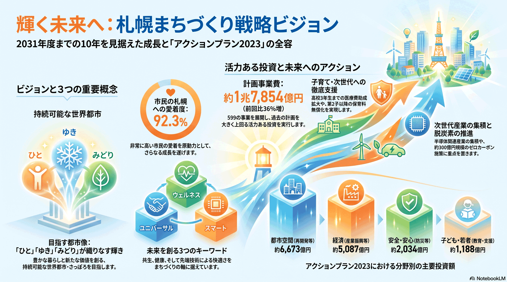

第2次札幌市まちづくり戦略ビジョン（最上位の指針）
市政の最上位の指針（2022〜2031年度）。3つの重要概念・8分野・20基本目標を定め、その実装計画『アクションプラン2023』（2023〜2027年度・599事業・計画事業費1兆7,854億円）で具体的な取り組みが動いている。

背景
第2次札幌市まちづくり戦略ビジョンは、市の計画体系で最上位に位置する基本的な指針で、令和4年度（2022年度）から令和13年度（2031年度）までの10年間が対象。「ユニバーサル（共生）」「ウェルネス（健康）」「スマート（快適・先端）」の3つの重要概念とSDGsを踏まえ、8の分野と20の基本目標を定めている。本サイトの多くの課題は、このビジョンの基本目標の実現に向けた取り組みと結びつく。
主要データ
| 対象期間 | 2022〜2031年度（10年）／実装計画アクションプラン2023は2023〜2027年度 |
|---|---|
| 構成 | 3つの重要概念／8分野／20の基本目標／5つの分野横断プロジェクト |
| アクションプラン2023の規模 | 599事業・計画事業費 約1兆7,854億円（AP2019は約1兆3,125億円、+36%） |
| 分野別事業費（上位） | 都市空間 約6,673億円／経済 約5,087億円／安全・安心 約2,034億円／子ども・若者 約1,188億円 |
| 今日的な重点課題 | 脱炭素社会の実現／半導体関連産業の集積 |
| 札幌への愛着度 | 92.3%（市民調査） |
事実
- 第2次まちづくり戦略ビジョンは市の計画体系の最上位に位置する指針で、2022〜2031年度の10年間を対象とし、目指す都市像を「『ひと』『ゆき』『みどり』の織りなす輝きが、豊かな暮らしと新たな価値を創る、持続可能な世界都市・さっぽろ」と定める。
- ユニバーサル（共生）・ウェルネス（健康）・スマート（快適・先端）の3つの重要概念のもと、8分野・20の基本目標と、分野をまたぐ5つの分野横断プロジェクトを設定している。
- 実装計画である「アクションプラン2023」（2023〜2027年度）は599事業・計画事業費 約1兆7,854億円で、前回のAP2019（約1兆3,125億円）から約36%増。中期財政フレームと成果指標による進行管理を組み込んでいる。
- 分野横断プロジェクトに加え、今日的課題として「脱炭素社会の実現」と「半導体関連産業の集積」に重点を置く。
- 子ども・若者分野では、子ども医療費助成の高校3年生までの拡大、第2子以降の保育料無償化（2024年度〜）、学校施設への冷房設備整備（約137.6億円）などを実施。
- 経済分野では、半導体関連産業集積促進事業、新展示場整備（アクセスサッポロ後継／約269.5億円）、スタートアップ・エコシステム構築事業（約22.6億円）、美食のまち・さっぽろブランド推進事業などが動く。
- 環境分野では『ゼロカーボンの推進』（約299.6億円）として住宅の高断熱化補助・エネルギー源転換・水素利活用・GX投資推進を、安全・安心分野では防災・減災DXや救急体制強化（救急隊36隊へ増強）を進めている。
解釈
個々の課題は単独で対応するのではなく、この上位ビジョンの目標群と、その実装計画であるアクションプラン2023の事業として優先順位づけ・予算化される。課題地図をビジョンと照らすと、どの基本目標にどれだけの事業費が配分され、何が手薄かを点検できる。事業費が前回比+36%へ膨らむ一方で財政の持続可能性も同時に問われており、『やりたいこと』と『財源』の緊張関係が最上位計画の最大の論点になっている。
提案
- 各課題への取り組みをビジョンの20基本目標とアクションプラン2023の個別事業に紐づけ、事業費と成果指標で進捗を管理する。
- 分野横断プロジェクトを軸に縦割りを越える（庁内横断の検討会議・進捗管理が前提）。
- 事業費が増える局面だからこそ、中期財政フレーム・30年の長期財政見通しと突き合わせ、選択と集中を可視化する。
深掘り — 市民の声と答え
3つの重要概念ごとに、具体的にどんな事業が動いている？
ユニバーサル（共生）では、（仮称）共生社会推進条例の制定を目指す『ユニバーサル（共生）の推進』（約1,197.5億円）や公共施設・旅客施設のバリアフリー化（約268.2億円）。ウェルネス（健康）では、地域包括支援センター機能強化（全27か所に専門員配置／約88.7億円）や健康寿命延伸・産後ケアの拡充。スマート（快適・先端）では、デジタル化による市民サービス向上、ICT活用による除排雪の効率化、防災・減災DX・救急DXなどが進む。いずれもアクションプラン2023に事業費つきで位置づけられている。
事業費はどの分野に厚い？前回からどう増えた？
アクションプラン2023の計画事業費は約1兆7,854億円で、AP2019の約1兆3,125億円から約36%増。分野別では都市空間（約6,673億円）と経済（約5,087億円）が大きい。中小企業貸付・企業会計の影響を除いた実質増2,436億円の主因は、学校・清掃工場の更新や再開発などの建設事業費増（+1,920億円）、除排雪（+258億円）や公共交通ネットワーク確保（バス補助等+64億円）など市民生活直結事業の維持・向上（+368億円）、少子化対策の子育て支援強化（+68億円）。事業費は伸びる一方、市債残高や基金取崩しは想定より抑制する方針も明記されている。
前回計画（アクションプラン2019）の達成度はどうだった？
AP2019では、まちづくりの取組の計画事業費総額1兆254億円に対し執行は約1兆371億円（進捗率101.1%）。主要事業407項目のうち237項目（58.2%）で目標を達成した一方、新型コロナの影響等で154項目（37.8%）が未達成だった。8つの政策目標で設定した成果指標53項目（重複あり）では、上昇23項目（43.4%）・下降28項目（52.8%）と、指標の半数超が悪化していた。アクションプラン2023はこの結果を踏まえ、事業効果を精査して事業を再構築したとしている。課題地図は、こうした『達成・未達成』を市民目線で点検する補助線になる。
検討体制・メンバー
札幌市まちづくり政策局が策定・進捗管理を担う。検討・推進には各分野の部局に加え、外部有識者、パブリックコメントを通じた市民の参加がある。
AIノート
AIの貢献度は中。20基本目標・約600事業の成果指標（KPI）モニタリングのダッシュボード化、計画事業費と進捗の可視化、市民意見（パブリックコメント）の分析に役立つ。実際にアクションプラン2023にもAIを用いた結婚支援（若者出会い創出事業）など、行政自身がAIを使う事業が現れ始めている。方向性の決定は市民・行政の合意が中心となる。